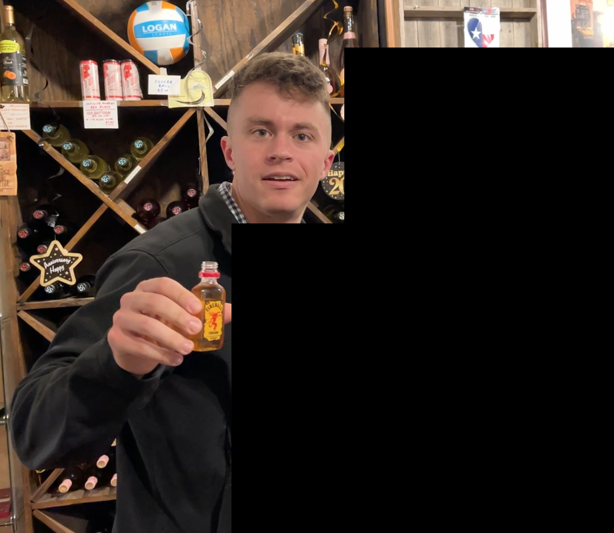
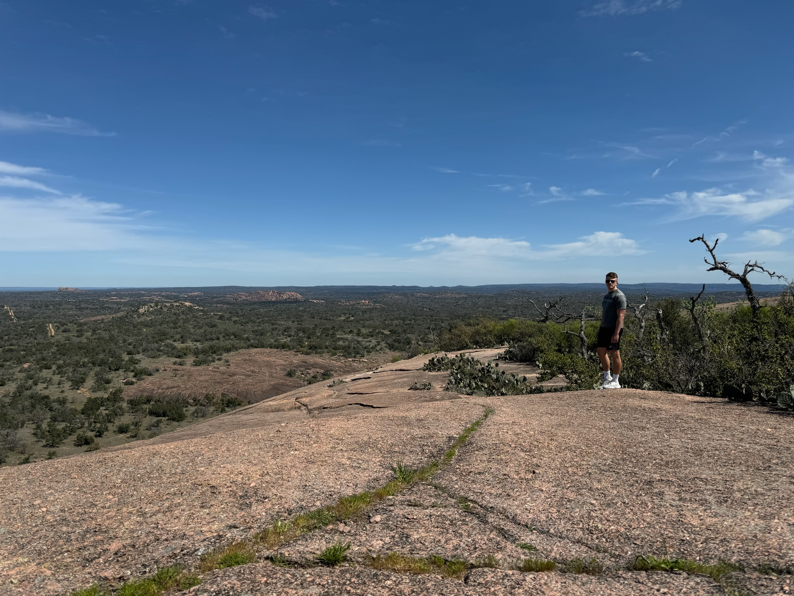

Fredericksburg trip report from 08-10 March 2024.
X and I left home base armed to the teeth with snacks, drinks, and childish excitement at the weekend festivities that awaited us in the German town of Fredericksburg (FB). The beautiful weather and scenic drive combined well with the banger of a playlist X compiled, making for a fun drive (along with playing the game "Perfiddle" (or something like that, I butchered the name and just kept with Perfiddle) she taught me). The stretch of road just outside of FB was especially nice: golden afternoon sunlight shone through the small orchards and on the vast grassy fields. Was this heaven?
The Airbnb we stayed at was legitimately deserving of five stars for a few reasons:
X and I changed into our finest dinner attires and walked to Otto's German Bistro, one of FB's few upscale restaurants. And fine dining it was:
The entire meal—food, company, and vibe—was phenomenal.

I begrudgingly left the warmness and coziness of the bed for a training ride in the blistering cold and gale force wind. What a painful reminder of what hard hill riding feels like!
With feet dethawed in the warm shower and our second-finest attires donned, we headed out for another tasty day, starting at Hill & Vine with a chicken schnitzel scramble, toast, and coffee. (My blinders were fully engaged the entire time, thank you very much.)
A windy walk put us at the pickup point of the 290 Wine Shuttle. What a freaking awesome business, both in the idea and the execution: simply pay $30 and get all-day access to multiple shuttles along a route of 14 wineries. No Ubers, no DDing, no limi...just kidding, they can't drop you off nor pick you up if you're drunk, but who's checking?
(I know very little about wine so the next few paragraphs just talk about the wineries themselvesobi, not the wine.)
First stop was Texas Heritage Vineyard. The tasting featured mostly reds, including one smoky wine (they make that??), and a pretty overt soft launch.

The second stop was Grape Creek Vineyards, which has apparently "garnered more than 100 medals from California to New York" according to 290WS's welcome email. The entrance and grounds seemed to corroborate this claim. The landscaping was meticulously manicured, the members-only areas pristine and obviously exclusive, and the staff smiley and inviting. We met A, C, L, and S in line after I got to talking to him about his hat, eventually learning they were wine enthusiasts by way of:
Me: So how many bottles of wine you think have in your house?
Him: I have about 1200-1500 in my cellar
Key word there is cellar. Cellar. This is how I imagine the matrix of rich-poor knowledgable-ignorant wine enthusiasts:
| Rich | Poor | |
|---|---|---|
| Knows everything about wine | Has a badass cellar with a ton of wine | Poor because has a badass cellar with a ton of wine |
| Knows nothing about wine | Possibly has a badass cellar with a ton of wine | See local grocery store wine deals |
But seriously, 1200-1500? The other guy had downsized his collection to a meager 600-800! Pshhhhh. They were namedropping bottles left and right and talked about investing in wine futures through the multiple wine clubs they were a part of. C also showed us how to better appreciate the notes and flavors within a wine through a borderline-gargling technique that caused me to inhale some wine down the wrong pipe and erupt in a violent coughing fit. We politely rejected the wine club registration I had been forewarned about and headed out to our final stop, the nothing-special-about-it Fat Ass Brewery, for a flight of beers before hopping back onto the plain shuttle to head back to the jurisdiction of FB. Supposedly this order is backwards to how people normally do it: you start at FAB, get trashed on their cheap alcohol, then go to Grape Creek and get taken advantage of by their nice salespeople who convince you to get a membership.
One piggyback ride and good deed later put us back at the car. We headed home to clean up and relax in the room that was absolutely covered in ***golden afternoon sunlight***.
Dinner was at The Auslander, but included a 45-minute wait, so we did what any normal people would do and went to the heavy metal bar next door to take ice cream shots and enjoy Lamb of God's soothing melodies and peaceful riffs. Two rounds later we ended up in another store for another two shots, this time peach Jell-O and Fireball, a match made in the heaven that was this random FB convenience store run by a very kind woman who was a bit thrown off by this random couple coming in for impromptu shots. The table-ready text came through shortly after, guiding us to a dinner of beers, multiple sausages, and hefty banter with each other and the waiter.
We took a verdauungsspaziergang down Main Street and enjoyed some dancing and live music at a small bar. An ice cream sandwich was for dessert before calling it an early night at 9:30pm.
Another cold bike ride was had, but this time featuring Main Street and the surrounding neighborhoods.
Breakfast was at Caliche Coffee: a fat burrito for X and a slippery breakfast sandwich with double espresso for me. Our food was accidentally taken by someone so we got two free cookies to make up for it.
We headed off to Enchanted Rock for some hiking and nostalgia. The hike was substantially shorter than little me (well, 2016 me) remembers. Maybe X and I are just way fitter than 2016 me?? Let's go with that. We shot up the rock in record time, found the seal per family tradition, and scarfed down some well-deserved PB&Js while looking out over the landscape. Our caving experience was subpar due to me having no idea where to go...whoops.
The drive back was equally as fun (if not more!) as the drive there, filled with pretzels, Fruit Roll-Ups, singing and dancing, kolaches, furiously signaling for truckers to honk their horns, and deep talks.
What a freaking awesome weekend.
Some interesting FB history facts from the History of Fredericksburg, Texas Wikipedia page:
home of Texas German, a dialect spoken by the first generations of German settlers who initially refused to learn English
1847 Treaty between the Comanche and the German Immigration Company. The treaty was unique in that it did not take away the rights of the Penateka Comanche, but was an agreement that the Comanche and settlers would mutually share the land, co-existing in peace and friendship. Meusebach paid the Penateka Comanches $3,000, slightly less than $70,000 in today's money, in food, gifts, and other commodities for their participation in the signing of the agreement. The native American signers of the treaty were only from the Penateka band. It is one of the very few treaties with native American tribes that was never broken
On July 1, 1850, an angry mob of 50 Fort Martin Scott soldiers burned down the store-courthouse in Fredericksburg, in a clash with store owner and County Clerk John M. Hunter over refusal to sell whiskey to a soldier.
Fredericksburg was primarily part of the pro-Union Texas resistance during the Civil War, but a portion of the population remained loyal to the Confederacy. While many Germans saw slavery as an evil, the 1860 census showed 33 slaves in Gillespie County.
There are still a few German speakers there.
The Grape Creek woman who poured our wine dropped the word "members" a lot. Whether it's a ploy to make us feel like outsiders and want to join or that's just her style, I do not know. I do know I'm curious about wine club member statistics. How long do they stay? How many bottles do they actually drink? How status-y is being a part of a wine club?
Thankfully Bauman and Taylor's An Exploratory Study on Wine Club Members' Intention to Remain is available and surveys directly from FB residents! However, I'm too lazy and disinterested to read the entire thing, so I'll cherry pick a few quotes:
Customer loyalty and brand attitude were found to significantly predict wine club members’ intention to remain in the wine club, accounting for approximately 49 per cent of the variance explained. However, perceptions of service quality and winery wine club policy were not found to significantly predict wine club members’ intention to remain in the wine club. Additionally, household income was found to also positively correlate with wine club members’ intention to remain.
45.5 per cent strongly agreed (n = 160), 28.4 per cent agreed (n = 100) ... that they intended to remain in the wine club for the next year
Texas wine club members have elevated levels of household income, are older, are married, are predominantly Caucasian, and feature a greater percentage of females compared to males
Homes in and around FB are crazy expensive. The FB real estate history shows that the average prices in 2013 was $256,810 vs. $631,780 in 2023. That's a 2.5x increase in a mere 10 years! Ouch. The homes that are those price aren't that big nor on lots that big. They are nice, but it comes down to location (read: access to those sweet wine clubs). Based on the amount of (Air)BnBs we saw while looking, I suspect FB is quickly getting Airbnb-ified by investors, reducing the housing supply and driving housing prices up and long-term residents out.